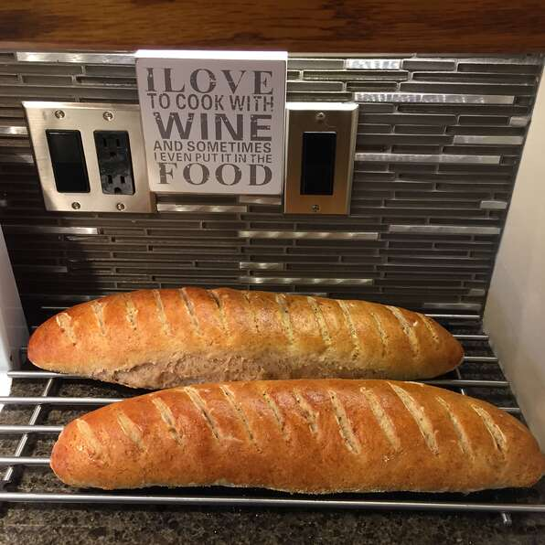

French Bread

Description
This French bread recipe has been perfected to my satisfaction - crunchy on the outside, and soft airiness on the inside. I hope you enjoy these stunning loaves!
Ingredients
- 2 cups sourdough starter
- 10 tbsp water
- 1 1/2 tsp olive oil
- 1 tsp salt
- 1 tbsp white sugar
- 1 tbsp active dry yeast
- 4 cups all-purpose flour
- 2 tsp cornmeal
- 2 cups boiling water
- 1 egg yolk
- 1 tbsp milk
Directions
- Place the sourdough starter, water, olive oil, salt, sugar, yeast, and flour in that order into the pan of a bread machine, set the machine on the dough cycle, and start the machine.
- After the machine has finished its cycle, turn the dough out onto a floured surface, and knead several times; mix in more flour if the dough is very sticky. Cut the dough in half, and roll each piece of dough out into a rectangle about 8 by 12 inches and 1/2-inch thick. Roll the rectangles into loaves the long way, pinch the seams, and taper and pinch the ends of the loaves.
- Line 2 baking sheets with parchment paper, and sprinkle paper with cornmeal. Place the loaves gently onto the prepared baking sheets, cover loosely with plastic wrap, and let rise in a warm place until doubled, about 30 minutes.
- Place a large baking stone onto the center rack of oven, and place a baking dish onto a lower rack. Preheat oven to 375 degrees F (190 degrees C). Carefully pour boiling water into the baking dish.
- Remove plastic wrap from loaves, and slash several 1/2-inch deep cuts into each loaf with a sharp knife. Whisk egg yolk and milk together in a small bowl until thoroughly mixed, and brush the loaves with the egg yolk mixture.
- Place the loaves into the preheated oven on top of the baking stone, and quickly spray the inside of the oven 4 or 5 times with a water-filled spray bottle. Shut oven door; wait 1 minute, and spray again; repeat twice more, spraying the oven 4 times with water at 1-minute intervals.
- Bake about 15 minutes, and remove the water-filled baking dish. Continue to bake until the bread is browned and the loaves make a hollow sound when thumped, about 15 more minutes. Remove bread to cool on racks.
Nutritional Facts
Per Serving: 173 calories; protein 5.8g; carbohydrates 34g; fat 1.3g; cholesterol 13.1mg; sodium 155.3mg.
Back to Home